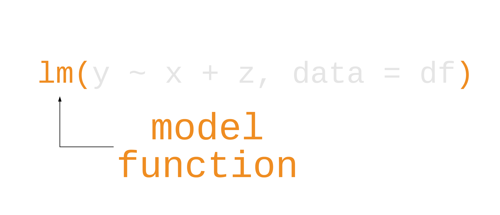
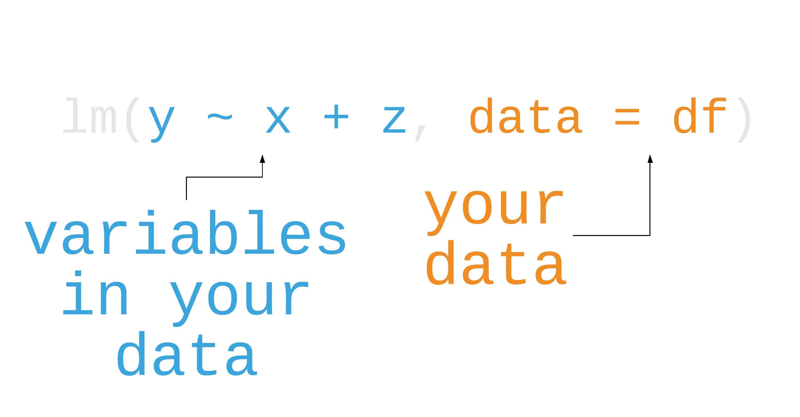
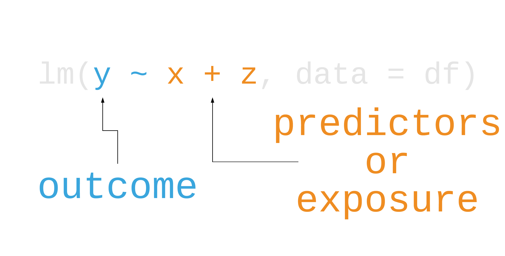

Modeling in R and Tidying Results
linear models and broom
2025-08-09
⚠️ This is not a course in a regression
Modeling in R
Modeling in R

Modeling in R

Modeling in R

Modeling in R
lm() = Linear Regression (OLS)
glm() = Generalized Linear Model (default family = Gaussian)
Modeling in R
Call:
lm(formula = price ~ carat, data = diamonds)
Coefficients:
(Intercept) carat
-2256 7756 Modeling in R
Call:
lm(formula = price ~ carat, data = diamonds)
Residuals:
Min 1Q Median 3Q Max
-18585.3 -804.8 -18.9 537.4 12731.7
Coefficients:
Estimate Std. Error t value Pr(>|t|)
(Intercept) -2256.36 13.06 -172.8 <2e-16 ***
carat 7756.43 14.07 551.4 <2e-16 ***
---
Signif. codes: 0 '***' 0.001 '**' 0.01 '*' 0.05 '.' 0.1 ' ' 1
Residual standard error: 1549 on 53938 degrees of freedom
Multiple R-squared: 0.8493, Adjusted R-squared: 0.8493
F-statistic: 3.041e+05 on 1 and 53938 DF, p-value: < 2.2e-16broom: tidy models

tidy()
glance()
augment()
broom: tidy models
tidy() = model coefficients
glance()
glance()augment()
augment()broom: tidy models
tidy()
tidy()glance() = model fit
augment()
augment()broom: tidy models
tidy()
tidy()glance()
glance()augment() = model predictions
broom: tidy models
tidy()
tidy()glance()
glance()augment()
augment()NOT a core member of the tidyverse. Need to load with library(broom)
Modeling in R
# A tibble: 2 × 5
term estimate std.error statistic p.value
<chr> <dbl> <dbl> <dbl> <dbl>
1 (Intercept) -2256. 13.1 -173. 0
2 carat 7756. 14.1 551. 0Modeling in R
# A tibble: 1 × 12
r.squared adj.r.squared sigma statistic p.value df
<dbl> <dbl> <dbl> <dbl> <dbl> <dbl>
1 0.849 0.849 1549. 304051. 0 1
# ℹ 6 more variables: logLik <dbl>, AIC <dbl>, BIC <dbl>,
# deviance <dbl>, df.residual <int>, nobs <int>Modeling in R
# A tibble: 53,940 × 8
price carat .fitted .resid .hat .sigma .cooksd
<int> <dbl> <dbl> <dbl> <dbl> <dbl> <dbl>
1 326 0.23 -472. 798. 0.0000452 1549. 0.00000600
2 326 0.21 -628. 954. 0.0000471 1549. 0.00000892
3 327 0.23 -472. 799. 0.0000452 1549. 0.00000602
4 334 0.29 -7.00 341. 0.0000398 1549. 0.000000966
5 335 0.31 148. 187. 0.0000382 1549. 0.000000278
6 336 0.24 -395. 731. 0.0000442 1549. 0.00000493
7 336 0.24 -395. 731. 0.0000442 1549. 0.00000493
8 337 0.26 -240. 577. 0.0000424 1549. 0.00000294
9 337 0.22 -550. 887. 0.0000461 1549. 0.00000756
10 338 0.23 -472. 810. 0.0000452 1549. 0.00000618
# ℹ 53,930 more rows
# ℹ 1 more variable: .std.resid <dbl>